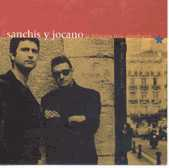

|  |
|
soy como una aspiradora
no necesito pretextos para perder
qué crees que me hizo aprender a perder?
sigo metiendo cervezas en el congelador
cuando acabo mi último cigarro
me retiró, me voy,
qué tal te ha ido?
estamos tú y yo frente a frente
siempre he pensado que me están engañando
siempre me dijeron ya puedes afinar
y al final, siempre los he machacado
siempre he hecho trampas en la vida
pero no he sabido recoger mi dinero
siempre me dijeron ya puedes afinar
y al final, siempre los he machacado
me ha roto tantas veces el alma
que ya no sé si existe
ella me dice cálmate, estoy contigo
es como una droga
hablan en mi cerebro y el papel
por qué hace tanto calor en mi cerebro?
en las piscinas con ella me encuentro bien
creo que soy una persona que le gusta perder
qué tal te ha ido?
quiero estar a solas para pensar todo esto
me quedaré como siempre esperando en nuestra esquina
qué tal te ha ido?
y a veces, cuando ella sonríe
digo es por mí